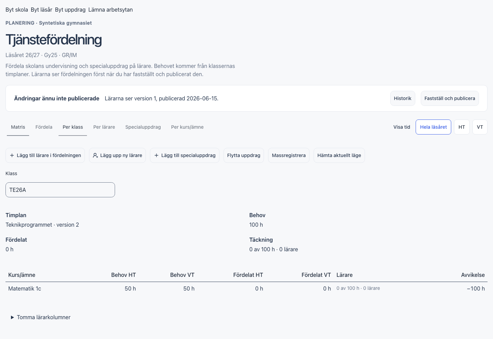
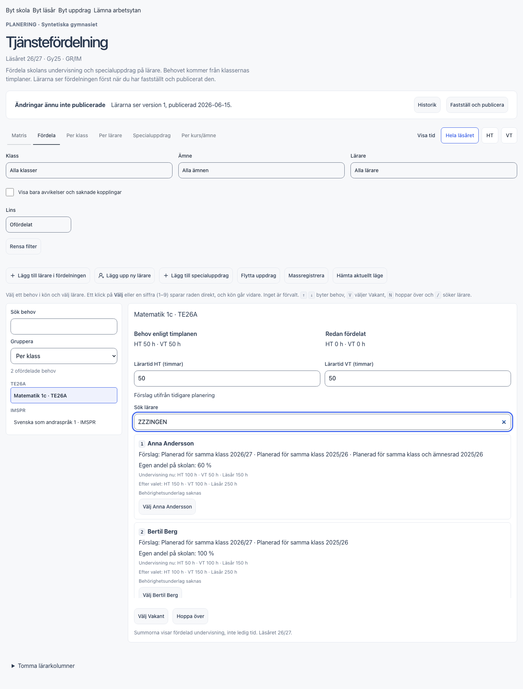
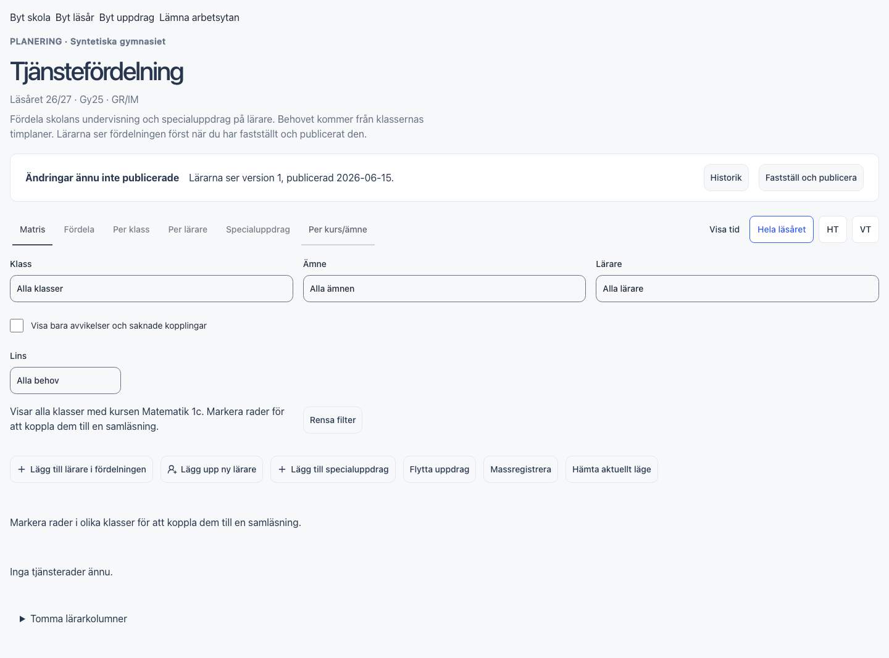
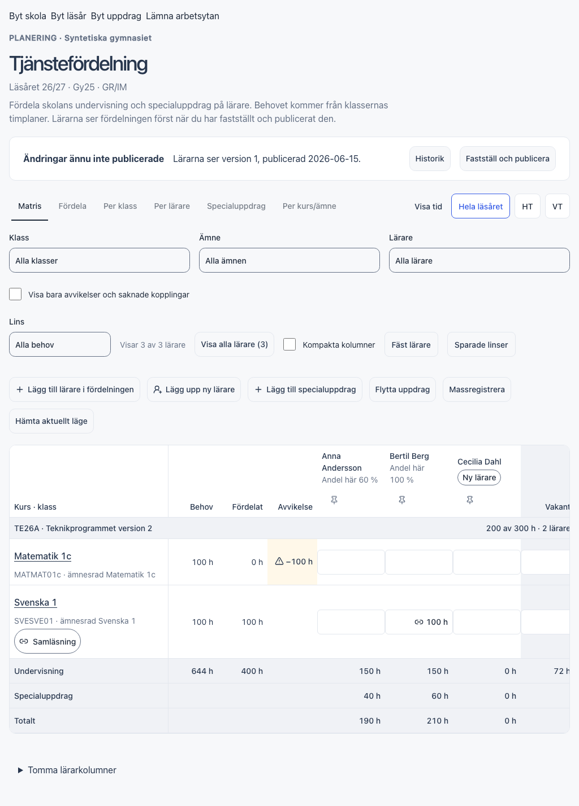

GRANSKNINGSRAPPORT · 29 oktober 2026 · Skolplattformen
En enklare tjänstefördelning med funktionerna kvar
Börja med att göra visat underlag pålitligt och skydda inmatningen. Ge sedan själva fördelningen större plats, med mer avancerade verktyg nära den uppgift där de behövs.
Granskningen hittade sex reproducerade UI-/UX-fel och nio förbättringsområden. Två fel bör prioriteras först: dolda filter ändrar klassens summering, och osparad tid försvinner vid byte av vy. Inga produktändringar har gjorts i denna granskning.
Uppföljning 05.1-35–36: Alla sex buggar B01–B06 är nu lokalt rättade och verifierade med syntetiska komponentprov. Senaste körningen: 212 UI-fall och åtta kompletterande kontroller PASS. Senaste genomförande och begränsningar. Ingen installation eller ny faktisk databasverifiering; nio förbättringstodos återstår, inklusive direkt tilldelning med ett klick. Rapportens ursprungliga fynd och bilder nedan är historiska bevis.
6reproducerade fel
9förbättringsområden
7 / 7relevanta befintliga UI-prov passerade
Vad som faktiskt granskades
Jag navigerade med en lokal testwebbläsare mellan Matris, Fördela, Per klass, Per lärare, Specialuppdrag och Per kurs/ämne. Jag öppnade formulär för tjänsterad, specialuppdrag, flytt och massregistrering samt granskade historik och publiceringshinder. Även sökning, filter, terminsval, omladdning och byte av vy kontrollerades.
Aktuella React-komponenter kördes på 127.0.0.1:5194/e2e/fixtures/tjanst-preview.html, med samlad slutkörning på en egen testserver på port 5209. API-svaren och personerna är syntetiska och ligger i webbläsarens minne. Dator: Chromium, 1440 × 900 och 1024 × 768. Telefon: Chromium, 390 × 844 och 320 × 740; även en separat mobilkontroll och befintliga telefonprov i WebKit. För större underlag användes en befintlig syntetisk variant med 40 lärare och 300 behov.
Begränsning: Den installerade miljön på 3012 visade inloggningssidan. Ingen autentiserad granskning utfördes där. Arbetskopian innehåller pågående ändringar i tjänstefördelningen; rapporten gäller den arbetskopian, med 0fbd0f7 som HEAD vid start. Vid slutkontrollen var dessa pågående kodändringar versionshanterade i 3e67281. Källornas kontrollsummor finns i kallor.json. Resultaten visar komponentbeteende, inte verifierad databasfunktion, verklig kommunanslutning eller mänskligt användargodkännande. Befintliga lokala ändringar har lämnats orörda.
Sex reproducerade fel
P1 betyder att felet bör hanteras först eftersom det kan ge ett missvisande beslutsunderlag eller förlorad inmatning. P2 betyder ett tydligt användarproblem som bör följa därefter. Det är prioriteringsförslag, inte ändrad kravacceptans.
B01 · P1 · Missvisande klassunderlagDolda filter ändrar vad klassvyn visar
Reproduktion: Välj Ämne → Matematik i Matris. Gå till Per klass och visa TE26A. Filterraden försvinner, men klassvyn visar bara matematiken.
Observerat: Behov visas som 100 h och Fördelat som 0 h. Samma klass utan det tidigare filtret har Behov 300 h och Fördelat 200 h. Varken aktivt ämnesfilter eller en rensningsknapp syns i klassvyn. Det blir lätt att läsa delmängdens siffror som klassens total.
Rättelse: Låt Per klass visa hela vald klass, eller visa kvarvarande filter tydligt tillsammans med texten ”Visat urval” och en rensningsknapp. Undvik att använda klassens sammanfattningsrubriker för en omärkt delmängd.
Godkännandefall: Byt från alla filtertyper och linser till varje klass. Full klass eller tydligt märkt delmängd ska visas konsekvent, även när filtret ger noll träffar.
Källstöd: web/app/tjanst-workspace.tsx:491,537 och web/app/tjanst-views.tsx:28. Bevis: B01 i resultat.json.
Visa skärmbild

Ämnesfiltret syns inte, men har tagit bort Svenska och Engelska ur klassvyn.Ändrad tid försvinner när man byter vy
Reproduktion: Öppna Fördela och ändra Lärartid HT från 50 till 37. Gå till Per lärare och tillbaka till Fördela.
Observerat: Fältet är åter 50. Ingen varning visas och arbetsytans signal för osparade ändringar är false. Inget sparkommando har skickats. Detta är förlust av osparad inmatning; det finns inget belägg för att sparade databasuppgifter går förlorade.
Rättelse: Bevara inmatningen per behov i arbetsytan tills användaren väljer lärare eller uttryckligen återställer den. Koppla ändrade tider till samma skydd för osparat arbete som övriga formulär använder.
Godkännandefall: 37 ska finnas kvar efter tur och retur mellan vyer. Testa också byte av behov, skola, läsår, storlek och lämnad arbetsyta. Ett medvetet återställningsval ska vara tydligt.
Källstöd: web/app/tjanst-allocation.tsx:75, web/app/tjanst-workspace.tsx:157–159. Bevis: B05 i fordjupning.json.
B03 · P2 · SökningLärarsökningen lämnar kvar förslag utan träff
Reproduktion: Öppna Fördela och sök efter ZZZINGEN i Sök lärare.
Observerat: Anna Andersson och Bertil Berg ligger kvar med valknappar. Före sökningen fanns fyra kandidater. Historiska förslag läggs in före sökfiltret; sökningen filtrerar bara övriga kandidater.
Rättelse: Låt samma sökregel gälla alla kandidater. Om rekommendationer ska ligga kvar behövs en separat, uttryckligt märkt lista som förklarar att den inte påverkas av sökningen.
Godkännandefall: Obefintligt namn ger noll träffar. Ett exakt namn visar rätt lärare. Enter och siffertangenter ska välja en synlig och begripligt namngiven kandidat.
Källstöd: web/app/tjanst-allocation.tsx:85–94. Bevis: B03 i resultat.json.
Visa skärmbild

En ofördelad kurs leder till en tom kursvy
Reproduktion: Klicka på Matematik 1c i Matris innan någon lärare har tilldelats.
Observerat: Per kurs/ämne öppnas med ”Inga tjänsterader ännu” och en uppmaning att markera rader för samläsning. Det kända behovet på 100 h i TE26A visas inte i innehållet. Kursvyn bygger bara på sparade tjänsterader.
Rättelse: Visa behov även när de saknar tjänsterader, med klass, tid och en väg till Fördela. Låt valet ”Visa alla klasser med kursen” omfatta även ofördelade klasser. Kräver ingen automatisk tilldelning.
Godkännandefall: Klick på ofördelad, delvis fördelad och fördelad kurs ger ett begripligt innehåll och en relevant nästa handling. Behoven ska kunna nås utan att en lärare först väljs.
Källstöd: web/app/tjanst-views.tsx:125–140. Bevis: B02 i resultat.json.
Visa skärmbild

Kursfiltret försvinner vid omladdning
Reproduktion: Klicka Matematik 1c i Matris. Kontrollera den synliga kursavgränsningen och ladda om sidan.
Observerat: Kursavgränsningen försvinner efter omladdningen. Direkt efter klicket visar sidan kursfiltret, medan history.state.tjanst.filter.course är tomt. Byte av vy skriver över det nyss uppdaterade historiktillståndet med tidigare filter.
Rättelse: Uppdatera vy och filter i en gemensam tillståndsövergång och skriv samma värde till historiken. Bevara nuvarande princip att person- och klassval inte skrivs i URL.
Godkännandefall: Kursfiltret och valt innehåll är konsekventa efter omladdning, Bakåt och Framåt. Kontrollera även länken till en viss samläsning.
Källstöd: web/app/tjanst-workspace.tsx:340–356. Bevis: B06 i fordjupning.json.
B04 · P2 · Missvisande kontroll”Visa tid” påverkar inte flera av vyerna
Reproduktion: Öppna Per lärare och växla till HT. Öppna Specialuppdrag och växla mellan HT och VT.
Observerat: Knappen markeras, men vyernas innehåll är oförändrat och visar fortfarande båda terminerna och årsbelopp. Terminsvalet visas globalt medan dessa komponenter inte tar emot valet. Det gäller även kursvyns fasta HT-/VT-rader enligt kodgranskningen; den delen har inte jämförts separat i webbläsaren.
Rättelse: Låt terminsvalet styra innehållet, eller dölj kontrollen där en full årssammanställning alltid visas. Skriv då ”Hela läsåret” i sammanställningen.
Godkännandefall: Varje synlig terminskontroll ändrar eller tydligt avgränsar den vy där den finns. Testa på dator och telefon.
Källstöd: web/app/tjanst-workspace.tsx:489–490,538–540. Bevis: B04 i resultat.json.
Nio sätt att förenkla utan att ta bort funktioner
Visa nuvarande layout på liten dator

Föreslaget gränssnitt att prova med rektor
Överst: Skola · Läsår · status ”Ändringar inte publicerade” · ”Granska och publicera”. Statusen visar även eventuella hinder.
Arbetsrad: Fördela | Matris | Granska. ”Granska” ger åtkomst till Per klass, Per lärare, Per kurs och Specialuppdrag. Historik finns nära publiceringsstatus. Exakt navigationsform bör användarprovas innan de sex nuvarande flikarna ersätts.
Urval: Visa: Ofördelat / Alla behov / Samläsningar · Filter · Visningsinställningar. Valda filter är alltid synliga. ”Lägg till” och ”Verktyg” samlar mindre frekventa åtgärder.
Direkt i matrisen: Ett klick i en tom lärarcell tilldelar återstående känt behov. Detaljer öppnas för befintlig tilldelning och avancerade val. Ingen extra lärarbekräftelse behövs för normalfallet.
Själva arbetet: Behov till vänster, vald rad i mitten och lärarkandidater med undervisning före/efter till höger där bredden räcker. På mindre dator används två kolumner. Behåll uttryckligt val av lärare, redigerbara tider och tydlig sparåterkoppling.
På telefon: Klass, lärare och ofördelade behov som läsbara kort. Visa läsläget tydligt. Mobilredigering är en separat produktfråga; denna rapport föreslår ingen ändring av det befintliga beslutet om redigering på dator.
Detta är ett förslag. Välj placering genom korta uppgifter med rektor: fördela en vakant kurs, hitta en lärares uppdrag, skapa en samläsning, flytta uppdrag och förstå ett publiceringshinder. Jämför tid, felval och behov av hjälp före och efter. Att gömma knappar är bara en förbättring om uppgifterna fortfarande går att hitta och genomföra.
Rekommenderad ordning
Samtliga sex fynd och nio förbättringar är registrerade som 15 registrerade GSD-todos i uppföljningslistan. Registreringen innebär ingen implementation eller ny kravacceptans.
- Rätta pålitligheten: B01 och B05 först. Lägg till meningsfulla regressioner för dolda filter och bevarad inmatning.
- Rätta sökning och navigation: B03, B06, B02 och B04. Kontrollera alla vyövergångar och terminslägen.
- Förenkla utan ombyggd domänmodell: Börja med F09 (direkt tilldelning) samt F01, F03, F04 och F05. De kan ge stor förbättring utan att ändra tjänstefördelningens grundfunktioner.
- Användarprova ny navigation och granskning: F02, F06 och F07. Behåll tidigare beslut om aktivt lärarval, samläsning, delning och mandat.
- Mät större underlag: F08. Optimera efter mätning och testa fokus, fästa kolumner och tangentbord vid eventuell virtualisering.
GSD och dokumentation: Rapporten är ett granskningsunderlag. Rapportens första publicering var ett granskningsunderlag. De senare lokala buggrättelserna i 05.1-35–36 redovisas ovan; övriga förbättringar väntar och ingen ny kravacceptans följer av dem. För nästa implementation ska relevanta fynd kopplas till fas 05.1, genomförbara planer och verifieringsfall. Vid ändrat användarbeteende ingår berörda handbokssidor och dokumentationsbygge. Den tekniska rapporten hör hemma internt, inte i användarhandboken.
SS 12000: Den föreslagna första etappen ändrar presentation och arbetsflöde. Den förutsätter inga nya standardobjekt eller ändrade person-, klass- eller grupprelationer. Stabila identifierare, externa ID:n, giltighetstider och käll-/skrivansvar ska bevaras även om tekniska ID:n visas mindre framträdande. En kommande plan ska ange tillämplig specifikationsversion och objektmappning för eventuella modelländringar. Ingen standardefterlevnad eller anslutning har verifierats här.
Verifiering och underlag
Den egna webbläsargenomsökningen har 17 scenarioresultat i resultat.json och fem fördjupningar i fordjupning.json. Två mobilscenarier i första körningen avbröts av för snäva testlokatorer. Lokatorerna korrigerades, och scenarierna kördes om i fördjupningen och den samlade slutkörningen. Tillgänglighetsträdet bekräftade att mobilens väljare heter ”Vy”; lokatorproblemet räknas därför inte som en produktbugg. Inga JavaScript-sidfel fångades i första genomgången.
Ett avgränsat urval ur befintliga tjanst-ui.spec.ts gav 7 passerade, 0 misslyckade och 7 avsiktligt överhoppade profilkombinationer. De sju relevanta proven kontrollerade: ny tjänsterad, bevarad inmatning vid sparfel, delning mellan två lärare och betygsansvar, dialogfokus/Escape samt tre mobilflöden. Överhoppade kombinationer är datorprov på telefon respektive telefonprov på dator. Resultat: regression.json. Detta var inte en full testsuite, typkontroll, byggnad, säkerhetsrevision eller databasverifiering.
Det som fungerar och bör bevaras: årsversionernas tydliga status, skrivskyddad historik, serverstyrda tillåtna åtgärder i komponenterna, uttryckliga lärarval, dialogens återförda fokus, förhandsvisning vid massändringar, separata undervisnings-/specialuppdragssummor och mobilens kort. Vid de kontrollerade mobilbredderna blev sidans bredd 390 respektive 320 px; ingen yttre sidledsrullning observerades. Publiceringsknappen var spärrad när det syntetiska svaret innehöll hinder.
Inte fullständigt genomprovat: alla valideringsgrenar i flytt och massregistrering, hela behörighetsmatrisen, verkliga användardata, publicering mot databas, skärmläsaranvändning och faktisk prestanda. Flytt och massregistrering granskades här i sina ingångsformulär; hela sparflödet omprövades inte.
Budget: Arbetet hölls till en lokal granskning och ett litet testurval, utan underagenter eller implementation. Veckomätaren visade 5 % vid start och 5 % vid kontroll efter webbläsargranskningen. Mätaren rapporterar hela procent och ger inte exakt kostnad per uppgift; ingen exakt förbrukning på 0 % påstås.
Övriga skärmbilder
Reproducerbara genomgångar: granska.mjs och fordjupning.mjs. Kräver befintlig Vite-testserver på 5194 (eller adress via TJANST_UX_URL) och installerade Playwright-webbläsare. Körs mot syntetiska minnesdata.